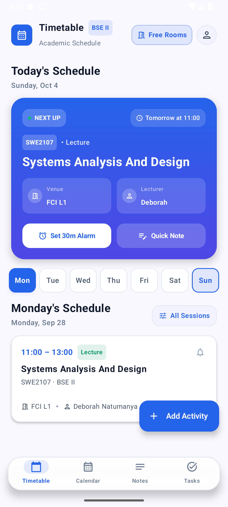
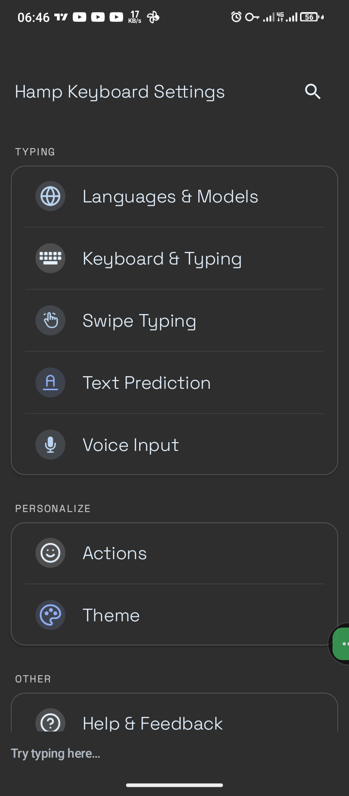

Termux X11 Floating Keyboard Button — a feature we added that
surfaces an on-demand soft keyboard by just tapping the floating button in the
Termux X11 app on Android. Built with C, Android NDK, X11, and Termux.

Lectures App — our Android timetable app with a write-through
offline cache, a free-room finder and queued sync. Currently shipping as a native
Android academic companion for MUST students, built with Kotlin and Jetpack
Compose M3.
Faculty picker in the Lectures app — you pick your faculty first and
the timetable narrows down from there.

Hamp Keyboard is our fork of the FUTO Keyboard (itself a fork of LatinIME,
the Android Open-Source Keyboard), and it installs alongside the official FUTO
Keyboard app. What makes it special is the spacebar gestures it adds — swipe
left/right moves the cursor character by character, and swipe up/down moves it
line by line.